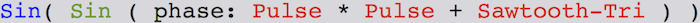

Documentation
Table of Contents
1 Plots
The line plots show a re-sampled version of the extensive data-set for the sake of speed and efficiency. The data-set is too cumbersome/bulky for efficient line plot rendering in the browser. The non-resampled one has approx 90.000 points in comparison to the re-sampled one that has only 9.000 approx. The re-sampling frequency is 5min and renders the greatest value observed during this 5min period.
2 Data mapping
2.1 PM10
Mapping: Pitch, pan, releaseTime, amplitude, amplitude level of noisy stochastic generator in the sound (Gendy2.ar).
Linear Mapping: As long the data values remain lower than 45 μg/m3 they remain panned to the left. Higher values result in increased pitch according to the Lydian musical scale.
Discrete - Exponential Mapping | Warnings: When values exceed this level the sound becomes more noisy and more close to the centre (pan). Higher values result in a more noisy sound texture. Here the values are mapped to a higher musical octave in comparison to the previous linear mapping for lower values. The values are linearly mapped to releaseTime and amplitude. Higher values result to longer releaseTime and louder warning sounds.
Mapping ranges: 1. Pitch acc → Lydian scale: 261Hz - 523 Hz | warnings: 1044Hz - 2092Hz 2. Pan (warnings): (-1) - (-0.5) 3. releaseTime: 0 - 1 sec | warnings: 1 - 5 sec 4. Amplitude (warnings): 0.1 - 0.4 | acts as a multiplier 5. Amplitude of Gendy: 0.0 - 1.0
2.2 PM25
Mapping: Pitch, pan, releaseTime, amplitude, amplitude level of noisy stochastic generator in the sound (Gendy5.ar).
Linear Mapping: As long the data values remain lower than 15 μg/m3 they remain panned to the right. Higher values result in increased pitch according to the Lydian musical scale.
Discrete - Exponential Mapping | Warnings: When values exceed this level the sound becomes more noisy and more close to the centre (pan). Higher values result in a more noisy sound texture. Here the values are mapped to a higher musical octave in comparison to the previous linear mapping for lower values. The values are linearly mapped to releaseTime and amplitude. Higher values result to longer releaseTime and louder warning sounds.
Mapping ranges: 1. Pitch acc → Lydian scale: 261Hz - 523 Hz | warnings: 1044Hz - 2092Hz 2. Pan (warnings): 1 - 0.5 3. releaseTime: 0 - 1 sec | warnings: 1 - 5 sec 4. Amplitude (warnings): 0.1 - 0.4 | acts as a multiplier 5. Amplitude of Gendy: 0.0 - 1.0
2.3 Noise Levels
Mapping: main oscillator frequency, modulation frequency ("beat"), modulation depth, LPF cut-off, modulation ocillator's mix
The noise level values are first mapped to the oscillator frequency. It is an FM synth based on two sinusoidal oscillators (carrier - modulator). The frequency remains the same in both oscillators.
Then two pulse wave oscillators (RM synthesis) and an added sawtooth-triangle oscillator act as the PM modulator. With increased noise values the higher amplitude level of the pulse ocillators in the PM. This results to a more "distinctive" and "harsh" sound texture. Lower values result to modulation using only the Sawtooth-triangle oscillator. Also, the values control the depth of the modulator (Pulse and Sawtooth-triangle oscillators).
The higher the noise levels the higher the LPF cut-off frequency.
Model of the synth as pseudo-code: 
Mapping ranges:
1. Main oscillator frequency: 120Hz - 520Hz
2. Modulation frequency (discrete mapping): 0Hz - 20Hz | [0,2,4,6,8,10,12,14,16,18,20]
3. Modulation depth: 0.0 - 5.0
4. LPF cut-off frequency: 6000Hz - 18000Hz
5. Modulation oscillator mix:
Pulse wave → linear 0.0 - 1.0,
Sawtooth-Tri → inverted linear 1.0 - 0.0
2.4 Truck count
Mapping: Frequency, de-tuning factor, amplitude
For the truck count a simple pitch mapping according to the Lydian scale was implemented. The higher the number of the trucks observed the higher the pitch. However, the number of trucks controls a frequency de-tuning factor. Higher values result to a stronger de-tuning effect. The truck values are mapped to the amplitude as well. Higher values result to higher amplitude. The synth is using a Sawtooth-Triangle oscillator.
All mappings are linear.
Mapping ranges: Frequency: 100Hz - 1095Hz De-tuning: 1 - 1.11 frequency multiplier
2.5 Humidity
Mapping: Wet (reverb), t60 (reverb)
Generally, the humidity values are mapped the amount of reverberation of all sounds. Low humidity will result to a "dry" effect (no reverberation) while higher values will result to more reverb.
As long as the values increase the "size" of the reverb increases along with the amount of the "wet" parameter.
It is suggested that humidity mapping is activated along with the noise synth as source for a better effect.
Mapping ranges: Wet: 1.5 - 3.0 t60: 0.5 - 1.5
3 Re-sampling data-set
The above check-boxes can be selected on the interface so that the initial data-set with a period of 30 sec / observation can be re-sampled.
In the re-sampling function the following periods can be applied to the initial data-set.
- 30s → Initial period
- T → Per minute
- H → Per Hour
- D → Per Day
- W → Per Week
Note: the active checkbox has to be un-clicked to apply a new one.